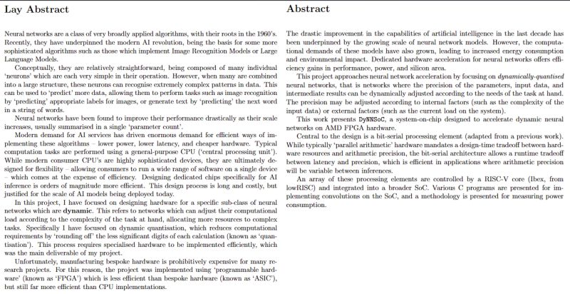

What I Posted on LinkedIn:
Happy to say I've submitted my final-year thesis on neural-network acceleration. My thanks to professor Deepu John for his guidance and supervision these past 8 months -- the project has been incredibly rewarding and I hope to see further research building on it in years to come.
My project (nicknamed 'DyNNSoC') focused on the design of specialised hardware for Dynamic Neural Networks (DyNN's) -- AI models which can adjust their algorithm according to the complexity of the task at hand.
For those in my network who may be interested, this is an explanation of my project's goals in layperson's terms (left) and technical terms (right), both adapted from my thesis text.

More:
So, I did thoroughly enjoy this project, but I have to admit I'm glad to be done with it. My university specialises in mixed signals and analogue electronics, which left pretty slim picking for a digital design engineer like myself. This project was by far my favourite of the options available, but I have very little formal background in AI acceleration, which I felt put me at the bottom of a steep learning curve.
Certainly I am glad I chose a challenging project, and I learned a huge amount about digital design in general and how to put together and program an SoC. That said, given the overwhelming amount of research going into AI accelerators at the moment, I highly doubt my contribution will be of much use. Admittedly my research turned up almost nothing on the topic of implementing dynamic quantisation in hardware, so perhaps there is value to this. However I suspect the reality is that while dedicated hardware does make dynamic quantisation far more efficient, dynamic quantisation itself simply is not tremendously useful.
In any case, it is certainly worth exploring the topic a little more, which is why I'm very glad to have been offered a part-time position at my university this summer. I'll continue to work with my supervisor on this project (hopefully now with more experience under my belt and more time on my hands) and will be looking to produce a paper for submission to a conference. This could be a valuable contribution to the academic state-of-the-art, and it will definitely be a valuable learning experience for me.
That work will begin in late August, I'm sure I'll update this blog then.
The code for my project is open-source on GitHub.
My thesis text is available here. This is the exact version I submitted to the university (including a couple typos I spotted after submission ☹).